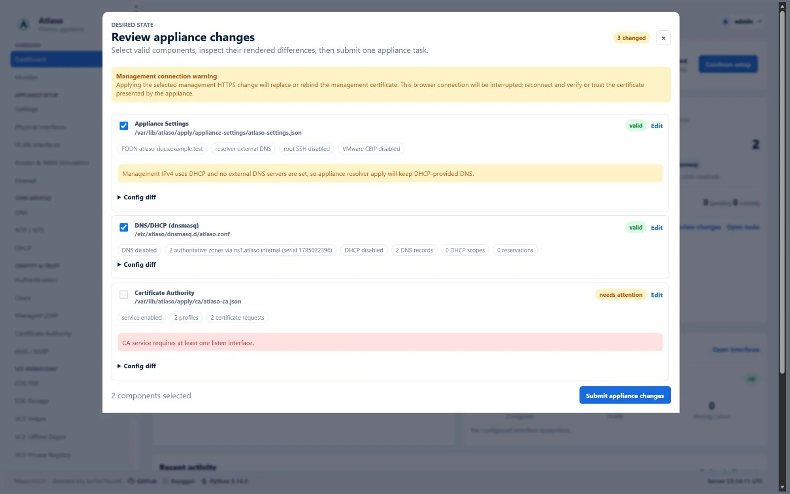

Apply appliance changes¶
Use Appliance Apply after editing Atlaso settings to enforce selected desired state on the Photon appliance. The review is global: one submission can apply related changes from several service pages in a controlled order.
Interface overview¶
This verified appliance view provides visual orientation before you begin.

Figure: Appliance change review with valid and invalid desired-state units.
Important
Editing and applying are separate actions. Autosave updates Atlaso's desired state; it does not change Photon services. Host changes begin only after an administrator selects valid units and chooses Submit appliance changes.
Before you begin¶
You need:
- an administrator account with permission to apply appliance changes;
- saved desired-state changes on one or more service or settings pages;
- validation errors resolved for every unit you intend to submit; and
- no other Appliance Apply task pending or running.
If a change can interrupt management access, use the local appliance console or VMware console as a recovery path before submitting it.
Understand the workflow¶
flowchart LR
A[Edit desired state] --> B[Review pending units]
B --> C{Unit valid?}
C -- No --> D[Return to its settings page]
D --> B
C -- Yes --> E[Inspect summary and diff]
E --> F[Submit selected units]
F --> G[Monitor component tasks]
G --> H[Verify appliance state]Atlaso groups related settings into apply units. For example, DNS and DHCP share one DNS/DHCP (dnsmasq) unit because
they use the same generated configuration and service reload. A change can affect several units; Web Terminal listener
changes commonly require Appliance Settings, Public Services, and Firewall together. A static
management-to-access role conversion that migrates a gateway also selects Routes & WAN Simulation with Network and
runs both through the protected management handoff; its prior WAN config is the rollback source. A Routes & WAN-only
submission that changes a default mirrored for an effective flagged management listener starts the same protected
handoff. Every bundled WAN unit executes from its captured snapshot before Atlaso commits its baseline.
Review pending changes¶
- Finish editing the desired state on the relevant service pages.
- Open Review appliance changes from the lower-left sidebar card or a page-level pending-change action.
- Read the status of every changed unit:
| Status | Meaning | What to do |
|---|---|---|
| valid | The desired state passes current validation. | Inspect it and keep it selected if it belongs in this run. |
| needs attention | Atlaso found an error that prevents submission. | Open the unit's page, correct the error, and review again. |
| Warning | The unit is valid but has an operational caution. | Read the warning and confirm the effect before submission. |
- Expand each selected unit and inspect its summary and rendered difference.
- Clear the checkbox for a valid unit that should remain pending for a later run.
Valid changed units are selected by default; invalid units are not. Unselected units remain pending after submission.
Warning
Review related units together when a feature crosses service boundaries; partial application can leave behavior unavailable.
Submit and monitor¶
- Confirm that the selection contains only the units intended for this run.
- Choose Submit appliance changes.
- Keep the task dialog open while the master task and its component rows progress.
- Open a component row to inspect its bounded, redacted result.
- Wait for completion; the dialog, sidebar badge, pending count, and global write lock update without a page reload.
If another session starts a new Apply immediately after the current master finishes, the monitor completes the current task's terminal refresh before following the newer task.
Components run sequentially. If one component fails, Atlaso stops the sequence and marks the remaining components skipped. Other write operations are locked while the master task is pending or running; read-only pages, task inspection, authentication actions, and safe cancellation remain available.
A management-path change is the exception to independent component execution. Atlaso selects Certificate Authority,
Network, Firewall, Appliance Settings, and Public Services together after all other dependencies expand, then runs one
recoverable handoff. It retains the previous addresses, listener, firewall policy, and TLS identity until bounded Atlaso
loopback, candidate nginx, dynamic-address, and host-facing /openapi.json checks prove the candidate ready.
The transaction validates bundled TLS material, persists the candidate resolver and source-restricted firewall rules,
and retires the old path only after readiness succeeds. Before publishing the applied Network baseline, Atlaso records
the helper-confirmed DHCP or SLAAC address in observed interface state so the committed listener remains immediately
eligible. On failure it restores the complete previous state and records the same actionable failing layer and rollback
result on every bundled component.
Successful baselines use the exact submitted snapshots, including applied resolver values; unrelated or concurrently
saved Appliance Settings changes remain pending. A missing known-good Network baseline blocks mutation. Durable state
and backups remain until the database commit is proven and acknowledged, so interruption or cleanup failure can retry
rollback or acknowledgement safely. See the technical reference for the complete handoff and recovery contract.
Safe cancellation does not interrupt the component already running. Every helper or adapter command in that component continues to completion. After the component returns, Atlaso skips the remaining components and releases the mutation lock when the master task becomes terminal.
An ordinary real Appliance Settings component keeps the management front door online. Before nginx changes, Atlaso
requires consecutive success from the configured loopback /openapi.json; after reload it requires the same upstream
and the guest-local management address/public-port front door to remain healthy. The active Atlaso worker is not
restarted. If activation or readiness fails, the helper restores the exact prior nginx and systemd files, reloads the
restored front door, and fails the component instead of exposing a continuing 502 response. Those snapshots and their
marker are synced before publication; an interrupted activation is rolled back by the Atlaso service pre-start gate
before the application can serve again. Before cleanup, the helper records durable readiness or rollback completion;
prepared state triggers recovery, while terminal state only retries cleanup before any wider transaction begins.
The dialog still understands the bounded Applying management settings; Atlaso is reconnecting to task status. state when following a retained task created by an older release that contains authenticated restart metadata. Current Appliance Settings tasks do not create that restart window.
If that reconnect exceeds the bounded grace window, or a status failure is not part of the planned restart, the dialog instead shows Live task status is temporarily unavailable with a link-free instruction to open Tasks in another tab if the problem persists. Atlaso continues retrying and retains the last known task and lock until an authoritative response arrives. Use Tasks to inspect the master task and verify appliance connectivity before deciding whether to reload the affected page.
Verify the result¶
Do not treat a submitted task as proof that the appliance changed successfully.
- Confirm that the master task is succeeded.
- Confirm that every selected component is succeeded, not failed or skipped.
- Return to the affected service page and confirm its pending indicator cleared.
- Verify the resulting runtime behavior from the relevant service guide.
When enabling local DNS, apply DNS/DHCP (dnsmasq) before the subsequent Appliance Settings resolver change. Atlaso
keeps the last-applied external or DHCP resolver active until the DNS/DHCP unit is applied, so an unapplied local-DNS
selection cannot redirect the appliance to loopback prematurely.
When disabling applied local DNS, selecting DNS/DHCP (dnsmasq) automatically includes Appliance Settings first.
That ordering moves the management resolver away from 127.0.0.1 before the local listener stops.
Examples include checking service health, resolving a managed DNS name, reaching the intended listener, or confirming the installed configuration from the appliance console. Use the service-specific verification procedure rather than relying only on a green UI status.
In development, adapters normally run in dry-run mode. A successful dry-run proves that Atlaso validated and recorded the command intent; it does not prove that Photon services changed.
Recover from a failed apply¶
- Open the failed component and read its validation, error, and redacted command output.
- Correct the desired state on the owning service page.
- Review pending units again; successful units keep their baselines, while failed and skipped changes remain pending.
- Submit only the units required for the corrected run.
If Atlaso restarts during an ordinary apply, startup fails the running child and master task, skips pending children, and releases the global lock. For an interrupted management handoff, the privileged helper first stops and verifies any surviving apply process, restores the captured previous runtime state, and records the recovery result. The same path runs immediately after a helper wait timeout because the fixed apply service can outlive its waiting process. Recovery uses a separate fixed service identity; before retrying, the helper stops and verifies any surviving recovery service so two rollback attempts cannot mutate the same network state concurrently. The helper retains that rollback state until Atlaso durably commits the bundled component results and baselines. If a restart occurs after that database commit, startup idempotently acknowledges the committed candidate instead of falsely claiming a rollback. A failed task whose helper acknowledgement or rollback is not proven retains the global Apply lock until startup or immediate exception recovery reconciles that state, even when an older task payload lacks the newer pending marker. Review the task before resubmitting.
If a selected unit changed after submission but before execution, Atlaso fails closed and asks for a new review. This prevents a queued task from applying state that the administrator did not inspect.
Safety boundaries¶
/ui/management/appliance-applyis the only ordinary desired-state host-mutation workflow. The confirmed complete factory reset on Backup and Restore is a dedicated recovery exception that validates and applies every clean factory unit itself; it does not create a follow-up Apply submission.- Only one Appliance Apply master can be pending or running.
- Photon mutations use constrained
atlaso-helperactions; the web process does not receive broad root access. - Previews, diffs, task results, logs, and audit details redact sensitive-looking values.
- Secret-bearing Local Users, Certificate Authority, and Managed LDAP inputs use mode
0600only during their helper execution window. Both the control plane and helper remove them on terminal outcomes, and startup removes stale inputs after interruption. - Read-only Local Users status uses an isolated short-lived input and cannot overwrite a pending apply payload.
- A successful component updates only that component's last-applied baseline.
- Fresh-appliance baseline initialization records comparison metadata only; it does not run helper commands.
Complete technical contents¶
No original section was removed. See the Appliance Apply technical reference for backend ownership, unit contracts, staging, helper execution, baselines, recovery, and interface expectations.